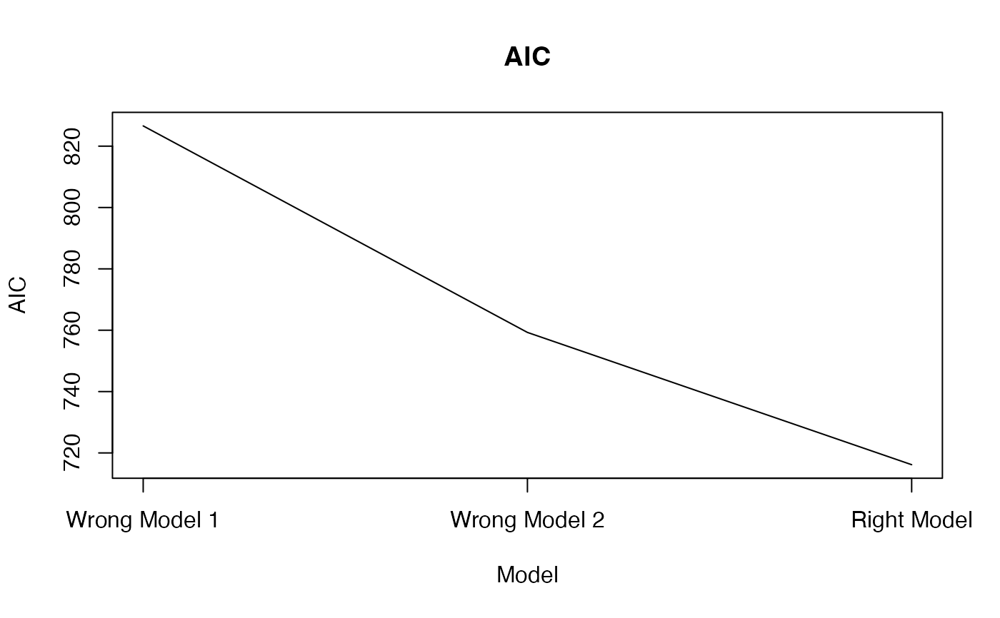
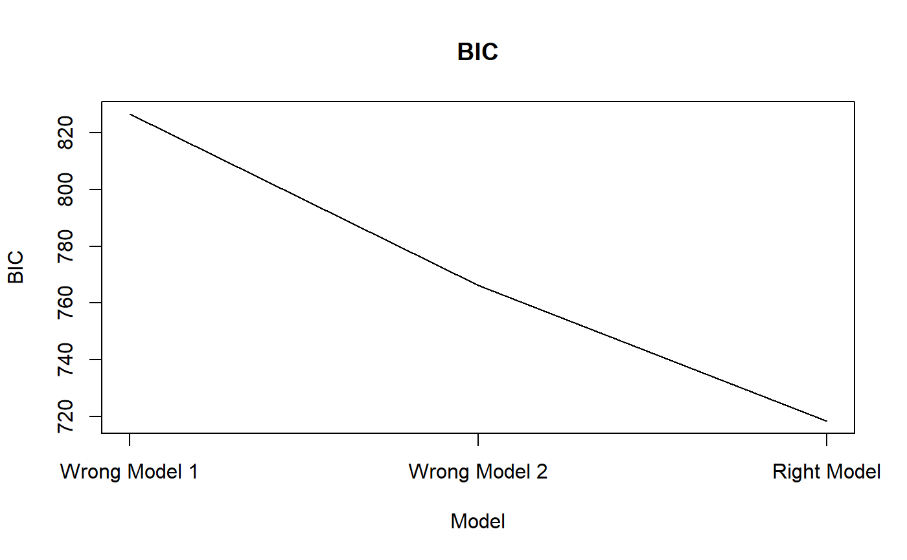

Calculate the AIC and BIC for Kronecker structured covariance models, assuming the array normal distribution.
array_bic_aic(
sig_squared,
p,
mode_ident = NULL,
mode_diag = NULL,
mode_unstructured = NULL
)A numeric. The MLE of sigma^2 in the array normal model (the 'variance' form of the total variation parameter).
A vector of integers. The dimension of the data array (including replication modes).
A vector of integers. The modes assumed to have identity covariances.
A vector of integers. The modes assumed to have diagional covariances.
A vector of integers. The modes of assumed to have unstructured covariances.
AIC A numeric. The AIC of the model.
BIC A numeric. The BIC of the model.
The AIC and BIC depend only on the data through the MLE of the total variation parameter. Given this, the dimension of the array, and a specification of which modes are the identity and which are unstructured, this function will calculate the AIC and BIC.
holq for obtaining sig_squared.
# Generate random array data with first mode having unstructured covariance
# second having diagonal covariance structure and third mode having identity
# covariance structure.
set.seed(857)
p <- c(4, 4, 4)
Z <- array(stats::rnorm(prod(p)), dim = p)
Y <- atrans(Z, list(tensr:::rwish(diag(p[1])), diag(1:p[2]), diag(p[3])))
# Use holq() to fit various models.
false_fit1 <- holq(Y, mode_rep = 1:3) ## identity for all modes
#> Scale Diff = 0
#> Scale = 154.2977
#>
false_fit2 <- holq(Y, mode_rep = 2:3) ## unstructured first mode
#> Scale Diff = 0.9474794
#> Scale = 79.22942
#>
#> Scale Diff = 0
#> Scale = 79.22942
#>
true_fit <- holq(Y, mode_rep = 3, mode_diag = 2) ## correct model
#> Scale Diff = 1.399258
#> Scale = 64.31057
#>
#> Scale Diff = 0.03221078
#> Scale = 62.30372
#>
#> Scale Diff = 0.002281847
#> Scale = 62.16187
#>
#> Scale Diff = 0.0003964936
#> Scale = 62.13723
#>
#> Scale Diff = 8.992577e-05
#> Scale = 62.13165
#>
#> Scale Diff = 2.163337e-05
#> Scale = 62.1303
#>
#> Scale Diff = 5.288946e-06
#> Scale = 62.12997
#>
#> Scale Diff = 1.299368e-06
#> Scale = 62.12989
#>
#> Scale Diff = 3.196904e-07
#> Scale = 62.12987
#>
#> Scale Diff = 7.868683e-08
#> Scale = 62.12987
#>
#> Scale Diff = 1.936925e-08
#> Scale = 62.12987
#>
#> Scale Diff = 4.767876e-09
#> Scale = 62.12987
#>
#> Scale Diff = 1.173631e-09
#> Scale = 62.12987
#>
#> Scale Diff = 2.888905e-10
#> Scale = 62.12987
#>
# Get AIC and BIC values.
false_aic1 <- array_bic_aic(false_fit1$sig ^ 2, p, mode_ident = 1:length(p))
false_aic2 <- array_bic_aic(false_fit2$sig ^ 2, p, mode_ident = 2:length(p),
mode_unstructured = 1)
true_aic <- array_bic_aic(true_fit$sig ^ 2, p, mode_ident = 2:length(p), mode_diag = 1)
# Plot the results.
plot(c(false_aic1$AIC, false_aic2$AIC, true_aic$AIC), type = "l",
xaxt = "n", xlab = "Model", ylab = "AIC", main = "AIC")
axis(side = 1, at = 1:3, labels = c("Wrong Model 1", "Wrong Model 2", "Right Model"))

plot(c(false_aic1$BIC, false_aic2$BIC, true_aic$BIC), type = "l", xaxt = "n",
xlab = "Model", ylab = "BIC", main = "BIC")
axis(side = 1, at = 1:3, labels = c("Wrong Model 1", "Wrong Model 2", "Right Model"))
